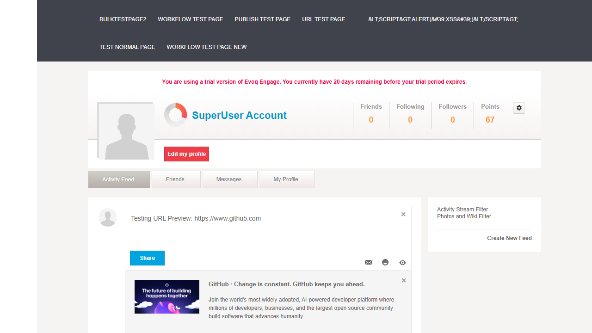
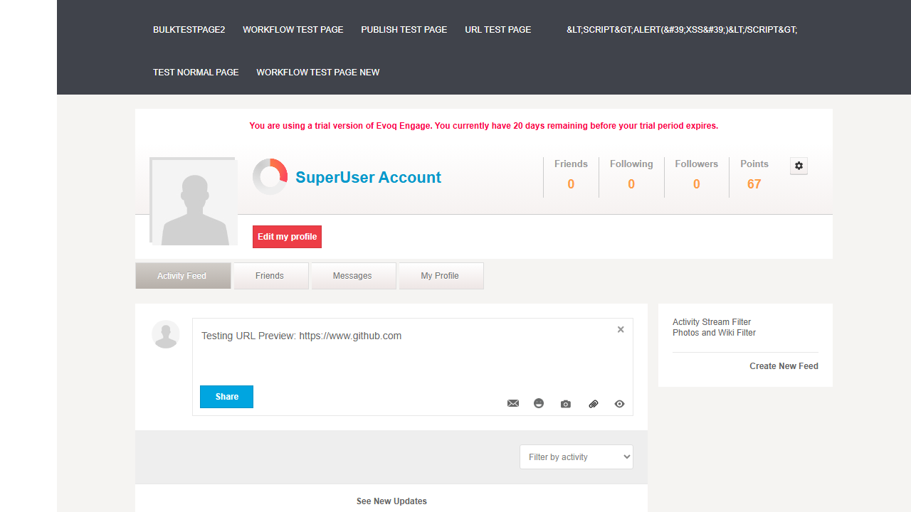
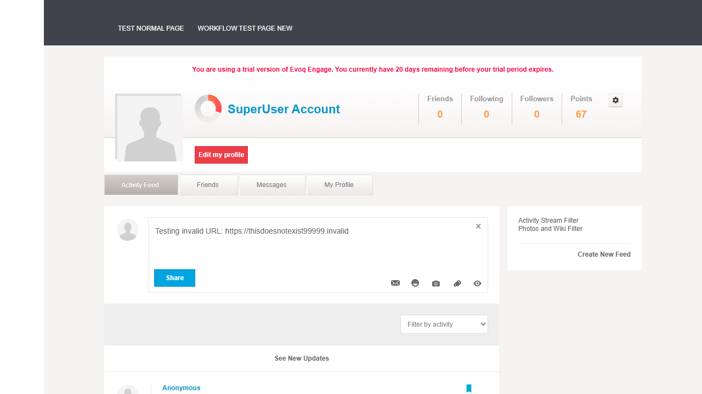
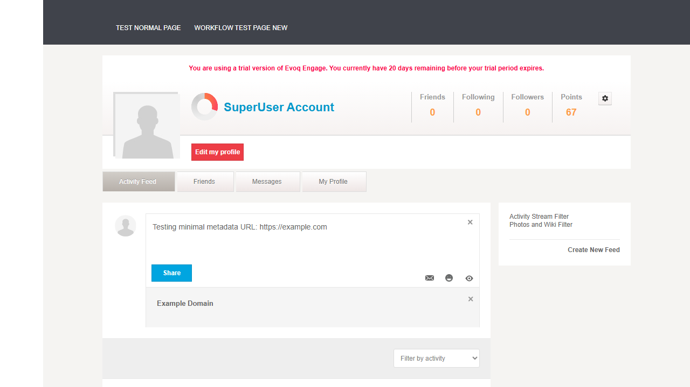
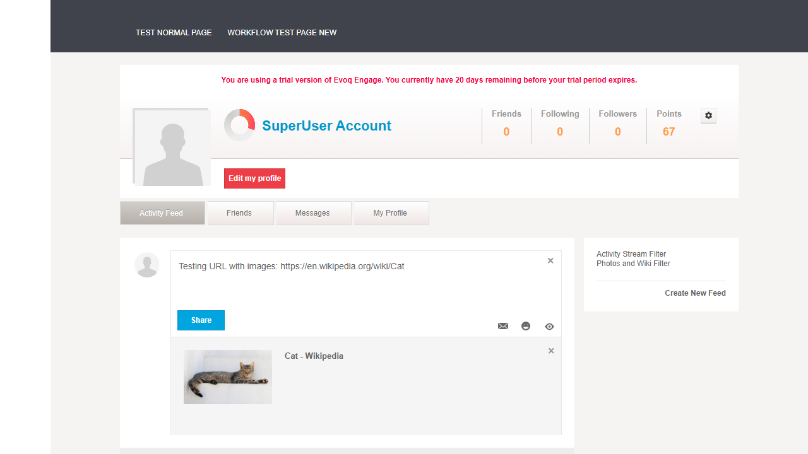
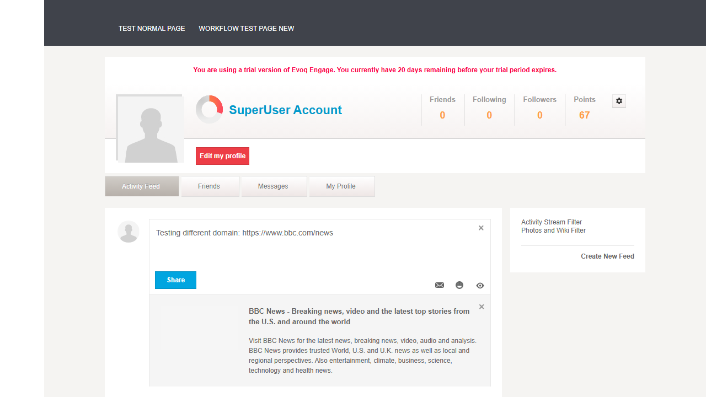
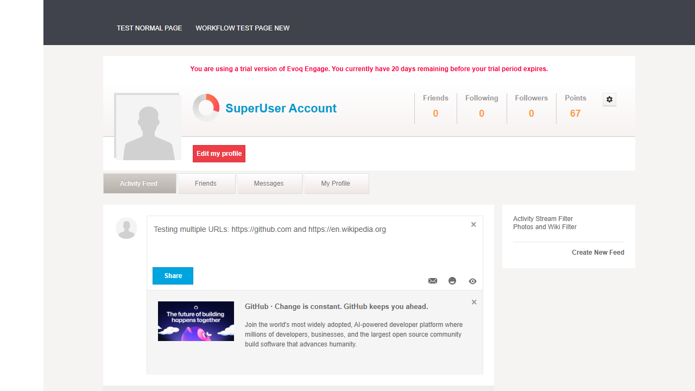

Automatically generate rich previews for URLs shared in posts
Priority
High
UI Location
Activity Stream > Create Post > URL Input
Test Date
January 6, 2026
Test 1: Preview Valid URL
PASS
What was tested
Verify that entering a valid URL with rich metadata (GitHub) generates a URL preview card with image, title, and description.
Steps Taken
Navigated to Activity Feed page
Entered text with GitHub URL: "Testing URL Preview: https://www.github.com"
Waited for preview to load
Verified preview card appeared with image, title ("GitHub: Let's build from here"), and description
Screenshot

Result
PASS - URL preview card displayed correctly with image thumbnail, title, and description from GitHub's Open Graph metadata.
Test 2: Remove URL Preview Before Posting
PASS
What was tested
Verify that users can remove the URL preview card before posting by clicking the close button.
Steps Taken
With URL preview card visible from previous test
Located and clicked the close button (X) on the preview card
Verified the preview card was removed
Verified the post text remained intact
Screenshot

Result
PASS - Close button successfully removed the URL preview card while preserving the post text.
Test 3: Preview Invalid URL
PASS
What was tested
Verify that entering an invalid/non-existent URL does not show a preview (graceful handling).
Steps Taken
Cleared input field
Entered text with invalid URL: "Testing invalid URL: https://thisdoesnotexist99999.invalid"
Waited for potential preview to load
Verified no preview card appeared
Screenshot

Result
PASS - System gracefully handled invalid URL by not displaying a preview card. No error messages shown.
Test 4: Preview URL with No Metadata
PASS
What was tested
Verify that URLs with minimal/no Open Graph metadata still show a basic preview.
Steps Taken
Cleared input field
Entered text with minimal metadata URL: "Testing minimal metadata URL: https://example.com"
Waited for preview to load
Verified preview card appeared with basic title only
Screenshot

Result
PASS - System correctly handled URL with minimal metadata, displaying title "Example Domain" without image or description.
Test 5: Preview URL with Images
PASS
What was tested
Verify that URLs with og:image metadata display an image thumbnail in the preview card.
Steps Taken
Cleared input field
Entered text with image-rich URL: "Testing URL with images: https://en.wikipedia.org/wiki/Cat"
Waited for preview to load
Verified preview card appeared with image thumbnail, title "Cat - Wikipedia"
Screenshot

Result
PASS - URL preview correctly displayed image thumbnail (cat photo) along with title from Wikipedia's metadata.
Test 6: Preview URL from Different Domains
PASS
What was tested
Verify that URL preview works for different domain types (news sites, social media, etc.).
Steps Taken
Cleared input field
Entered text with news site URL: "Testing different domain: https://www.bbc.com/news"
Waited for preview to load
Verified preview card appeared with BBC News branding, title, and description
Screenshot

Result
PASS - URL preview successfully fetched and displayed metadata from BBC News including full title and description.
Test 7: Preview Multiple URLs in Single Post
PASS
What was tested
Verify how the system handles multiple URLs in a single post.
Steps Taken
Cleared input field
Entered text with multiple URLs: "Testing multiple URLs: https://github.com and https://en.wikipedia.org"
Waited for previews to load
Observed that only the first URL (GitHub) generated a preview card
Screenshot

Result
PASS - System correctly handled multiple URLs by generating a preview for the first detected URL. This is expected behavior to avoid cluttered UI.
Test Summary
Test Case
Status
1. Preview Valid URL
PASS
2. Remove URL Preview Before Posting
PASS
3. Preview Invalid URL
PASS
4. Preview URL with No Metadata
PASS
5. Preview URL with Images
PASS
6. Preview URL from Different Domains
PASS
7. Preview Multiple URLs in Single Post
PASS
Total: 7 tests | Passed: 7 | Failed: 0
Observations
YouTube URL Delay: YouTube URLs showed extended loading time (loading spinner) compared to other domains. This may be due to YouTube's rate limiting or blocking server-side requests for metadata.
Single Preview Limitation: When multiple URLs are entered in a single post, only the first URL generates a preview card. This appears to be intentional design to prevent UI clutter.
Preview Loading: URL previews are fetched via the PreviewUrl API endpoint which calls Utilities.GetLinkData() to retrieve Open Graph metadata.
Preview Template: The URL preview uses a Knockout.js template (urlPreviewerTemplate) that displays the preview image, title, description, and close button.
Graceful Degradation: URLs that cannot be fetched or have no metadata are handled gracefully - no error messages are displayed, and the user can still post the text with the URL.